CODING AGENTS AS PIXEL WORLD MODELS
traex/DeepSeek-V4.1-Flash · 0131
点击播放 · 原生 RGB 像素
此结果可播放，但该运行尚未通过最终提交审核。页面展示不代表评测通过。
逐轮保存的候选
回放视频、检查图与代码变化。
每份候选均可单独播放。实际图片检查记录在下方工具轨迹中。
候选 01播放与检查图
点击播放 · 原生 RGB 像素
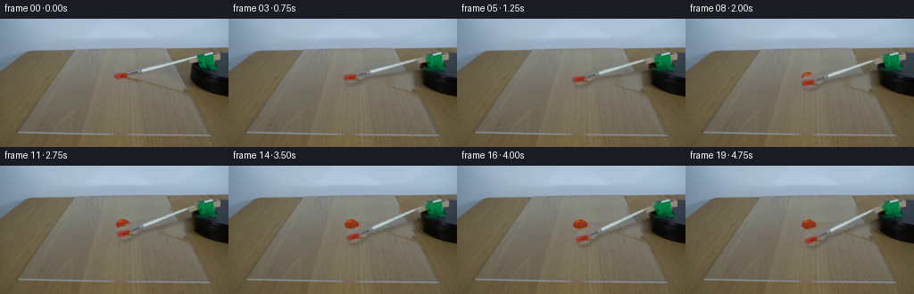
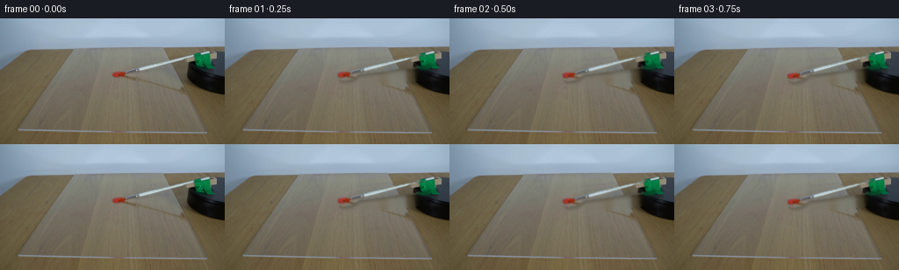
展开代码变化
--- 上一保存版本
+++ 本次保存版本
@@ -0,0 +1,205 @@
+from pathlib import Path
+
+import cv2
+import imageio.v2 as imageio
+import numpy as np
+from PIL import Image
+
+import artifact_io
+
+
+CASE_DIR = Path(__file__).resolve().parent
+WIDTH, HEIGHT = 256, 144
+FRAME_COUNT = 20
+FPS = 4
+PIVOT = np.array([229.0, 49.0], dtype=np.float32)
+
+
+def _polygon_mask(shape, polygons, blur=0.55):
+ mask = np.zeros(shape, dtype=np.uint8)
+ for points in polygons:
+ cv2.fillPoly(mask, [np.asarray(points, dtype=np.int32)], 255)
+ if blur:
+ mask = cv2.GaussianBlur(mask, (0, 0), blur)
+ return mask.astype(np.float32) / 255.0
+
+
+def _brush_alpha():
+ # Tight silhouette of the bristles, ferrule, and tapered white handle.
+ polygons = [
+ [(128, 59), (132, 56), (140, 56), (146, 58), (149, 61),
+ (148, 66), (142, 69), (134, 70), (129, 68)],
+ [(139, 54), (149, 55), (153, 58), (152, 63), (148, 66),
+ (141, 65), (137, 61)],
+ [(148, 52), (226, 43), (230, 47), (230, 53), (149, 63),
+ (146, 61)],
+ ]
+ return _polygon_mask((HEIGHT, WIDTH), polygons, blur=0.7)
+
+
+def _shadow_alpha():
+ polygon = [(148, 62), (225, 53), (230, 57), (225, 65),
+ (151, 72), (146, 68)]
+ return _polygon_mask((HEIGHT, WIDTH), [polygon], blur=2.2)
+
+
+def _clean_plate(frame):
+ brush = _brush_alpha()
+ shadow = _shadow_alpha()
+ repair = np.maximum(brush, shadow * 0.8)
+ repair_mask = (repair > 0.025).astype(np.uint8) * 255
+ repair_mask = cv2.dilate(
+ repair_mask, cv2.getStructuringElement(cv2.MORPH_ELLIPSE, (3, 3))
+ )
+ return cv2.inpaint(
+ cv2.cvtColor(frame, cv2.COLOR_RGB2BGR),
+ repair_mask,
+ 3,
+ cv2.INPAINT_TELEA,
+ )[:, :, ::-1].copy()
+
+
+def _smoothstep(edge0, edge1, value):
+ t = np.clip((value - edge0) / (edge1 - edge0), 0.0, 1.0)
+ return t * t * (3.0 - 2.0 * t)
+
+
+def _paint_patch(clean, repair_alpha, progress):
+ """Fill the repaired part of the original paint dollop and add a small drag."""
+ yy, xx = np.mgrid[0:HEIGHT, 0:WIDTH]
+ cx = 137.0 + 0.6 * progress
+ cy = 64.1 + 1.3 * progress
+ rx = 7.8 + 0.5 * progress
+ ry = 4.9 + 0.45 * progress
+ theta = np.arctan2((yy - cy) / ry, (xx - cx) / rx)
+ radial = np.sqrt(((xx - cx) / rx) ** 2 + ((yy - cy) / ry) ** 2)
+ edge = 1.0 + 0.055 * np.sin(3.0 * theta + 0.4)
+ edge += 0.035 * np.sin(7.0 * theta - 1.1)
+ blob = _smoothstep(1.03, 0.94, radial / edge)
+
+ # The bristles enter from the left and drag a narrow red tail downward.
+ tail = np.zeros((HEIGHT, WIDTH), dtype=np.float32)
+ tail_amount = float(np.clip((progress - 0.22) / 0.78, 0.0, 1.0))
+ if tail_amount > 0:
+ end_y = int(round(66.0 + 11.0 * tail_amount))
+ end_x = int(round(135.5 + 2.5 * tail_amount))
+ cv2.line(tail, (136, 64), (end_x, end_y), 1.0, 2, cv2.LINE_AA)
+ cv2.circle(tail, (end_x, end_y), 2, 1.0, -1, cv2.LINE_AA)
+ tail = cv2.GaussianBlur(tail, (0, 0), 0.55)
+
+ paint_alpha = np.clip(blob + 0.62 * tail, 0.0, 1.0)
+ paint_alpha *= repair_alpha
+
+ shade = np.clip(0.82 + 0.24 * (cy + ry - yy) / (2.0 * ry), 0.72, 1.08)
+ texture = (
+ 3.5 * np.sin(0.72 * xx + 0.21 * yy)
+ + 2.0 * np.sin(1.47 * xx - 0.38 * yy + 0.8)
+ )
+ color = np.empty((HEIGHT, WIDTH, 3), dtype=np.float32)
+ color[:, :, 0] = 151.0 * shade + texture
+ color[:, :, 1] = 55.0 * shade + 0.28 * texture
+ color[:, :, 2] = 24.0 * shade + 0.12 * texture
+
+ # A tiny glossy ridge catches the same overhead light as the original paint.
+ highlight = np.exp(
+ -(((xx - 134.5) / 3.0) ** 2 + ((yy - 61.9) / 1.15) ** 2)
+ )
+ color += highlight[:, :, None] * np.array([42.0, 27.0, 11.0])
+
+ alpha = paint_alpha[:, :, None]
+ return np.clip(clean * (1.0 - alpha) + color * alpha, 0, 255).astype(np.uint8)
+
+
+def _warp_layer(layer, alpha, angle):
+ matrix = cv2.getRotationMatrix2D(
+ (float(PIVOT[0]), float(PIVOT[1])), angle, 1.0
+ )
+ warped = cv2.warpAffine(
+ layer,
+ matrix,
+ (WIDTH, HEIGHT),
+ flags=cv2.INTER_LINEAR,
+ borderMode=cv2.BORDER_CONSTANT,
+ borderValue=(0, 0, 0),
+ )
+ warped_alpha = cv2.warpAffine(
+ alpha,
+ matrix,
+ (WIDTH, HEIGHT),
+ flags=cv2.INTER_LINEAR,
+ borderMode=cv2.BORDER_CONSTANT,
+ borderValue=0,
+ )
+ return warped, np.clip(warped_alpha, 0.0, 1.0)
+
+
+def _composite_brush(image, source, brush_alpha, angle, progress):
+ brush, alpha = _warp_layer(source.astype(np.float32), brush_alpha, angle)
+
+ # A short, soft shadow follows the brush and keeps it above the acrylic.
+ shadow = cv2.GaussianBlur(alpha, (0, 0), 1.5)
+ shadow_matrix = np.float32([[1, 0, 1.4], [0, 1, 3.2]])
+ shadow = cv2.warpAffine(
+ shadow,
+ shadow_matrix,
+ (WIDTH, HEIGHT),
+ flags=cv2.INTER_LINEAR,
+ borderMode=cv2.BORDER_CONSTANT,
+ borderValue=0,
+ )
+ result = image.astype(np.float32) * (1.0 - 0.20 * shadow[:, :, None])
+
+ # A very small paint-loaded glint grows as the bristles cross the dollop.
+ contact_glint = np.clip(1.0 - abs(progress - 0.28) / 0.22, 0.0, 1.0)
+ if contact_glint > 0:
+ glow = np.exp(
+ -(((np.arange(WIDTH)[None, :] - 135.5) / 2.2) ** 2
+ + ((np.arange(HEIGHT)[:, None] - 63.5) / 1.3) ** 2)
+ )
+ result += glow[:, :, None] * (5.0 * contact_glint) * alpha[:, :, None]
+
+ alpha3 = alpha[:, :, None]
+ return np.clip(result * (1.0 - alpha3) + brush * alpha3, 0, 255).astype(np.uint8)
+
+
+def generate():
+ first = np.asarray(Image.open(CASE_DIR / "first_frame.png").convert("RGB"))
+ assert first.shape == (HEIGHT, WIDTH, 3)
+
+ brush_alpha = _brush_alpha()
+ repair_alpha = np.maximum(brush_alpha, _shadow_alpha() * 0.8)
+ clean = _clean_plate(first)
+
+ frames = [first.copy()]
+ total_angle = 12.0 # Clockwise sweep through the paint and out the far side.
+ for index in range(1, FRAME_COUNT):
+ progress = index / (FRAME_COUNT - 1)
+ eased = 0.18 * progress + 0.82 * (
+ progress * progress * (3.0 - 2.0 * progress)
+ )
+ angle = total_angle * eased
+ plate = _paint_patch(clean, repair_alpha, progress)
+ frame = _composite_brush(plate, first, brush_alpha, angle, progress)
+ frames.append(frame)
+
+ frames = np.stack(frames, axis=0).astype(np.uint8)
+ assert np.array_equal(frames[0], first)
+ artifact_io.save(frames, CASE_DIR)
+
+ try:
+ imageio.mimsave(
+ CASE_DIR / "video.mp4",
+ frames,
+ fps=FPS,
+ codec="libx264",
+ quality=8,
+ macro_block_size=1,
+ )
+ except Exception as exc:
+ print(f"MP4 preview was not written: {exc}")
+
+ return frames
+
+
+if __name__ == "__main__":
+ generate()
候选 02播放与检查图
点击播放 · 原生 RGB 像素

展开代码变化
--- 上一保存版本
+++ 本次保存版本
@@ -27,19 +27,19 @@
def _brush_alpha():
# Tight silhouette of the bristles, ferrule, and tapered white handle.
polygons = [
- [(128, 59), (132, 56), (140, 56), (146, 58), (149, 61),
- (148, 66), (142, 69), (134, 70), (129, 68)],
- [(139, 54), (149, 55), (153, 58), (152, 63), (148, 66),
- (141, 65), (137, 61)],
- [(148, 52), (226, 43), (230, 47), (230, 53), (149, 63),
- (146, 61)],
+ [(127, 59), (131, 55), (139, 55), (146, 57), (149, 60),
+ (149, 67), (143, 70), (134, 71), (128, 69)],
+ [(138, 53), (149, 54), (154, 57), (153, 64), (149, 67),
+ (141, 66), (136, 62)],
+ [(147, 51), (226, 42), (230, 46), (230, 53), (149, 64),
+ (145, 61)],
]
return _polygon_mask((HEIGHT, WIDTH), polygons, blur=0.7)
def _shadow_alpha():
- polygon = [(148, 62), (225, 53), (230, 57), (225, 65),
- (151, 72), (146, 68)]
+ polygon = [(147, 62), (225, 53), (230, 57), (225, 66),
+ (150, 73), (145, 69)]
return _polygon_mask((HEIGHT, WIDTH), [polygon], blur=2.2)
@@ -49,14 +49,24 @@
repair = np.maximum(brush, shadow * 0.8)
repair_mask = (repair > 0.025).astype(np.uint8) * 255
repair_mask = cv2.dilate(
- repair_mask, cv2.getStructuringElement(cv2.MORPH_ELLIPSE, (3, 3))
- )
- return cv2.inpaint(
- cv2.cvtColor(frame, cv2.COLOR_RGB2BGR),
- repair_mask,
- 3,
- cv2.INPAINT_TELEA,
- )[:, :, ::-1].copy()
+ repair_mask, cv2.getStructuringElement(cv2.MORPH_ELLIPSE, (5, 5))
+ )
+
+ # The background is mostly smooth vertical wood grain. Sample matching
+ # rows left and right of the removed brush instead of smearing the edge.
+ clean = frame.astype(np.float32).copy()
+ ys, xs = np.where(repair_mask > 0)
+ for y, x in zip(ys, xs):
+ left = frame[y, max(0, x - 9):max(1, x - 4)]
+ right = frame[y, min(WIDTH, x + 5):min(WIDTH, x + 10)]
+ samples = np.concatenate([left, right], axis=0)
+ clean[y, x] = np.median(samples, axis=0)
+
+ # Recover the broad acrylic-sheet edges, which are horizontal rather than
+ # wood grain and must not acquire a striped vertical repair.
+ for y in (26, 27, 28, 29, 30, 31):
+ clean[y] = frame[y]
+ return np.clip(clean, 0, 255).astype(np.uint8)
def _smoothstep(edge0, edge1, value):
@@ -81,13 +91,12 @@
tail = np.zeros((HEIGHT, WIDTH), dtype=np.float32)
tail_amount = float(np.clip((progress - 0.22) / 0.78, 0.0, 1.0))
if tail_amount > 0:
- end_y = int(round(66.0 + 11.0 * tail_amount))
- end_x = int(round(135.5 + 2.5 * tail_amount))
- cv2.line(tail, (136, 64), (end_x, end_y), 1.0, 2, cv2.LINE_AA)
- cv2.circle(tail, (end_x, end_y), 2, 1.0, -1, cv2.LINE_AA)
- tail = cv2.GaussianBlur(tail, (0, 0), 0.55)
-
- paint_alpha = np.clip(blob + 0.62 * tail, 0.0, 1.0)
+ end_y = int(round(66.0 + 7.5 * tail_amount))
+ end_x = int(round(135.0 + 1.0 * tail_amount))
+ cv2.line(tail, (135, 64), (end_x, end_y), 1.0, 1, cv2.LINE_AA)
+ tail = cv2.GaussianBlur(tail, (0, 0), 0.4)
+
+ paint_alpha = np.clip(blob + 0.52 * tail, 0.0, 1.0)
paint_alpha *= repair_alpha
shade = np.clip(0.82 + 0.24 * (cy + ry - yy) / (2.0 * ry), 0.72, 1.08)
候选 03播放与检查图

可观测工具轨迹
实际执行的命令与返回图片。
命令 1exit 0
/bin/bash -c "pwd && rg --files -g 'prompt.txt' -g 'GENERATION_RULES.md' -g '"'!*.mp4'"' -g '"'!*.webm'"'"
命令 2exit 0
/bin/bash -c 'ls -la'
命令 3exit 0
/bin/bash -c "find . -maxdepth 2 -type f -printf '%p %s bytes\\n' | sort"
命令 4exit 0
/bin/bash -c "sed -n '1,220p' GENERATION_RULES.md"
命令 5exit 0
/bin/bash -c "sed -n '1,220p' prompt.txt"
命令 6exit 0
/bin/bash -c "sed -n '1,260p' artifact_io.py"
命令 7exit 0
/bin/bash -c "sed -n '1,240p' player_template.html"
命令 8exit 0
/bin/bash -c "python - <<'PY' import importlib.util for m in ['numpy','PIL','cv2','scipy','skimage']: print(m, bool(importlib.util.find_spec(m))) PY"
命令 9exit 127
/bin/bash -c "file first_frame.png && python - <<'PY'
from PIL import Image
im=Image.open('first_frame.png')
print(im.mode, im.size)
PY"命令 10exit 0
/bin/bash -c "python - <<'PY'
from PIL import Image
im=Image.open('first_frame.png')
im.crop((90,35,255,95)).resize((990,360), Image.Resampling.NEAREST).save('.tmp/brush_crop.png')
im.crop((190,30,256,100)).resize((396,420), Image.Resampling.NEAREST).save('.tmp/platform_crop.png')
PY"命令 11exit 0
/bin/bash -c "python - <<'PY'
from PIL import Image, ImageDraw, ImageFont
im=Image.open('first_frame.png').crop((105,25,256,100)).resize((906,450), Image.Resampling.NEAREST)
d=ImageDraw.Draw(im)
for x in range(110,257,10):
xx=(x-105)*6
d.line((xx,0,xx,450),fill=(255,255,0),width=1)
d.text((xx+2,2),str(x),fill=(255,255,0))
for y in range(30,101,10):
yy=(y-25)*6
d.line((0,yy,906,yy),fill=(0,255,255),width=1)
d.text((2,yy+1),str(y),fill=(0,255,255))
im.save('.tmp/grid_crop.png')
PY"命令 12exit 0
/bin/bash -c "python - <<'PY'
import cv2, numpy as np
im=cv2.cvtColor(cv2.imread('first_frame.png'),cv2.COLOR_BGR2RGB)
for y in range(35,75,3):
print('y',y, [(x,tuple(im[y,x])) for x in range(120,256,10)])
PY"命令 13exit 0
/bin/bash -c "python - <<'PY'
from PIL import Image
im=Image.open('first_frame.png')
im.crop((120,52,153,73)).resize((660,420), Image.Resampling.NEAREST).save('.tmp/paint_crop.png')
PY"命令 14exit 0
/bin/bash -c 'command -v ffmpeg || true'
命令 15exit 130
/bin/bash -c 'find /usr /opt /home/tiger -type f -name ffmpeg 2>/dev/null | head'
命令 16exit 0
/bin/bash -c "python - <<'PY' import importlib.util for m in ['imageio','imageio_ffmpeg','av','moviepy','matplotlib']: print(m, bool(importlib.util.find_spec(m))) PY"
命令 17exit 0
/bin/bash -c "python - <<'PY'
from PIL import Image
im=Image.open('first_frame.png')
im.crop((118,34,246,75)).resize((1280,410), Image.Resampling.LANCZOS).save('.tmp/assembly_crop.png')
PY"命令 18exit 0
/bin/bash -c 'python generate.py'
命令 19exit 0
/bin/bash -c "python - <<'PY'
import cv2, numpy as np
from PIL import Image
for i in [0,1,2,4,8,12,16,19]:
im=np.array(Image.open(f'frames/{i:02d}.png'))
cv2.imwrite(f'.tmp/pix{i:02d}.png',cv2.resize(im,(1024,576),interpolation=cv2.INTER_NEAREST))
PY"命令 20exit 0
/bin/bash -c "python - <<'PY'
from PIL import Image
im=Image.open('first_frame.png')
im.crop((120,52,155,75)).resize((700,460),Image.Resampling.NEAREST).save('.tmp/paint_only.png')
PY"命令 21exit 0
/bin/bash -c "python - <<'PY'
import numpy as np
from PIL import Image
im=np.array(Image.open('first_frame.png'))
# red mask in paint region
r,g,b=im[:,:,0].astype(int),im[:,:,1].astype(int),im[:,:,2].astype(int)
m=(r>95)&(r>g*1.35)&(r>b*1.5)
ys,xs=np.where(m & (np.indices(m.shape)[1]>115)&(np.indices(m.shape)[1]<160)&(np.indices(m.shape)[0]>50)&(np.indices(m.shape)[0]<80))
print(xs.min(),xs.max(),ys.min(),ys.max(),len(xs))
for y in range(58,72):
print(y, ''.join('#' if m[y,x] else '.' for x in range(125,152)))
PY"命令 22exit 0
/bin/bash -c "python - <<'PY'
import cv2, numpy as np
from generate import _brush_alpha, _warp_layer
from PIL import Image
first=np.array(Image.open('first_frame.png').convert('RGB'))
for i in [0,1,4,8,12,16,19]:
a=first
if i:
b=np.array(Image.open(f'frames/{i:02d}.png'))
# compare brush-white pixels source values moved
else:b=first
ys,xs=np.where((b[:,:,0]>150)&(b[:,:,1]>150)&(b[:,:,2]>150)&(np.indices(b.shape[:2])[1]>125)&(np.indices(b.shape[:2])[1]<230)&(np.indices(b.shape[:2])[0]>35)&(np.indices(b.shape[:2])[0]<75))
print(i, len(xs), (xs.min(),xs.max(),ys.min(),ys.max()) if len(xs) else None)
PY"命令 23exit 0
/bin/bash -c "python - <<'PY'
from PIL import Image
for i in [1,4,8,12,16,19]:
im=Image.open(f'frames/{i:02d}.png')
im.crop((120,45,180,85)).resize((720,480),Image.Resampling.NEAREST).save(f'.tmp/paint_f{i:02d}.png')
PY"命令 24exit 0
/bin/bash -c "python - <<'PY'
import numpy as np, cv2
from PIL import Image
import generate
first=np.array(Image.open('first_frame.png'))
clean=generate._clean_plate(first)
Image.fromarray(clean).save('.tmp/clean.png')
Image.fromarray(clean).crop((110,25,240,90)).resize((1040,520),Image.Resampling.NEAREST).save('.tmp/clean_crop.png')
PY"命令 25exit 0
/bin/bash -c "python - <<'PY'
from PIL import Image
im=Image.open('first_frame.png')
im.crop((145,38,232,61)).resize((1044,276),Image.Resampling.NEAREST).save('.tmp/handle_crop.png')
PY"命令 26exit 0
/bin/bash -c "python - <<'PY'
from PIL import Image
im=Image.open('first_frame.png')
for i,(box,name) in enumerate([((125,40,155,75),'ferrule'),((215,34,256,70),'mount')]):
im.crop(box).resize(((box[2]-box[0])*15,(box[3]-box[1])*15),Image.Resampling.NEAREST).save('.tmp/'+name+'.png')
PY"命令 27exit 0
/bin/bash -c "python - <<'PY'
from PIL import Image
im=Image.open('first_frame.png')
im.crop((120,35,250,78)).resize((1300,430),Image.Resampling.LANCZOS).save('.tmp/full_big.png')
PY"命令 28exit 0
/bin/bash -c "python - <<'PY'
import numpy as np
from PIL import Image
im=np.array(Image.open('first_frame.png'))
for x in [140,145,150,155,160,170,180,190,200,210,220]:
ys=np.where((im[:,x,0]>100)&(im[:,x,1]>100)&(im[:,x,2]>100))[0]
print(x, [(int(y),tuple(im[y,x])) for y in ys if 35<=y<=75])
PY"命令 29exit 0
/bin/bash -c "python - <<'PY'
import cv2,numpy as np
from PIL import Image
from generate import _brush_alpha,_shadow_alpha
im=np.array(Image.open('first_frame.png'))
a=_brush_alpha();s=_shadow_alpha()
mask=((np.maximum(a,s*.8)>.025)*255).astype('uint8')
mask=cv2.dilate(mask,cv2.getStructuringElement(cv2.MORPH_ELLIPSE,(3,3)))
vis=im.copy(); vis[mask>0]=[0,255,255]
Image.fromarray(vis).crop((115,30,240,80)).resize((1250,500),Image.Resampling.NEAREST).save('.tmp/maskvis.png')
PY"命令 30exit 1
/bin/bash -c "python - <<'PY'
from PIL import Image
import numpy as np
ims=[]
for i in range(4):
a=np.array(Image.open(f'frames/{i:02d}.png').crop((115,30,245,85))).resize((650,275),Image.Resampling.NEAREST)
ims.append(Image.fromarray(a))
out=Image.new('RGB',(1300,550))
for i,im in enumerate(ims):out.paste(im,((i%2)*650,(i//2)*275))
out.save('.tmp/seq0_3.png')
PY"命令 31exit 1
/bin/bash -c "python - <<'PY'
from PIL import Image
import numpy as np
ims=[]
for i in range(4):
a=np.array(Image.open(f'frames/{i:02d}.png').crop((115,30,245,85))).resize((650,275),Image.Resampling.NEAREST)
ims.append(Image.fromarray(a))
out=Image.new('RGB',(1300,550))
for i,im in enumerate(ims):out.paste(im,((i%2)*650,(i//2)*275))
out.save('.tmp/seq0_3.png')
PY"命令 32exit 0
/bin/bash -c "python - <<'PY'
from PIL import Image
ims=[Image.open(f'frames/{i:02d}.png').crop((115,30,245,85)).resize((650,275),Image.Resampling.NEAREST) for i in range(4)]
out=Image.new('RGB',(1300,550))
for i,im in enumerate(ims):out.paste(im,((i%2)*650,(i//2)*275))
out.save('.tmp/seq0_3.png')
PY"命令 33exit 0
/bin/bash -c "python - <<'PY'
import numpy as np
from PIL import Image
for i in range(20):
im=np.array(Image.open(f'frames/{i:02d}.png'))
# white-ish handle pixels in safe region x 160:225 y 40:75
for y in range(40,76):
pass
# list topmost strong highlight around x 195-225
ys,xs=np.where((im[:,:,0]>165)&(im[:,:,1]>175)&(im[:,:,2]>175)&(np.indices(im.shape[:2])[1]>=195)&(np.indices(im.shape[:2])[1]<=225)&(np.indices(im.shape[:2])[0]>=40)&(np.indices(im.shape[:2])[0]<=75))
print(i, round(float(np.mean(ys)),2) if len(ys) else None)
PY"命令 34exit 0
/bin/bash -c 'python generate.py'
命令 35exit 0
/bin/bash -c "python - <<'PY'
from PIL import Image
import numpy as np
for i in [1,4,8,12,16,19]:
im=Image.open(f'frames/{i:02d}.png')
im.crop((120,42,185,82)).resize((780,480),Image.Resampling.NEAREST).save(f'.tmp/new_f{i:02d}.png')
PY"命令 36exit 0
/bin/bash -c "python - <<'PY'
import numpy as np
from PIL import Image
im=np.array(Image.open('first_frame.png'))
# sample around likely stroke path (exclude paint & brush)
for y in range(55,85):
vals=[]
for x in range(120,170):
r,g,b=map(int,im[y,x])
if r>80 and r>g*1.3 and r>b*1.4: vals.append(x)
if vals: print(y,min(vals),max(vals),len(vals))
PY"命令 37exit 0
/bin/bash -c "python - <<'PY'
import numpy as np, cv2
from PIL import Image
import generate
first=np.array(Image.open('first_frame.png'))
clean=generate._clean_plate(first)
Image.fromarray(clean).crop((115,25,240,90)).resize((1250,650),Image.Resampling.NEAREST).save('.tmp/clean2.png')
PY"命令 38exit 0
/bin/bash -c "python - <<'PY'
import numpy as np
from PIL import Image
for i in range(20):
im=np.array(Image.open(f'frames/{i:02d}.png'))
ys,xs=np.where((im[:,:,0]>170)&(im[:,:,1]>180)&(im[:,:,2]>180)&(np.indices(im.shape[:2])[1]>=195)&(np.indices(im.shape[:2])[1]<=225)&(np.indices(im.shape[:2])[0]>=40)&(np.indices(im.shape[:2])[0]<=75))
print(i, round(float(np.mean(ys)),2) if len(ys) else None)
PY"命令 39exit 0
/bin/bash -c 'python -m py_compile generate.py artifact_io.py'
命令 40exit 0
/bin/bash -c "python - <<'PY'
from pathlib import Path
import numpy as np
from PIL import Image
import imageio.v2 as imageio
frames=np.stack([np.array(Image.open(f'frames/{i:02d}.png')) for i in range(20)])
first=np.array(Image.open('first_frame.png').convert('RGB'))
print('frames', frames.shape, frames.dtype)
print('first_identical', np.array_equal(frames[0], first))
print('range', int(frames.min()), int(frames.max()))
print('changed_pixels_last', int(np.any(frames[-1] "'!= frames[0], axis=2).sum()))
r=imageio.get_reader('"'video.mp4')
print('video_meta', r.get_meta_data())
print('video_frames', sum(1 for _ in r))
r.close()
print('sizes', {p.name: p.stat().st_size for p in [Path('pixels.npz'),Path('video.mp4'),Path('index.html')]})
PY"命令 41exit 0
/bin/bash -c "python - <<'PY'
from PIL import Image
ims=[Image.open(f'frames/{i:02d}.png').crop((118,30,240,86)).resize((488,224),Image.Resampling.NEAREST) for i in [0,5,10,15,19]]
out=Image.new('RGB',(976,672),(20,20,20))
for j,im in enumerate(ims):out.paste(im,((j%2)*488,(j//2)*224))
out.save('.tmp/final_sequence.png')
PY"命令 42exit 0
/bin/bash -c 'git status --short 2>/dev/null || true'
视觉工具实际返回图片 1
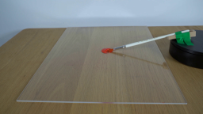
视觉工具实际返回图片 2
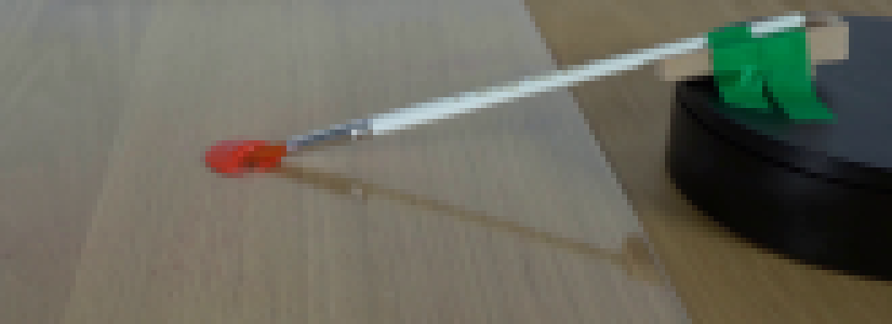
视觉工具实际返回图片 3
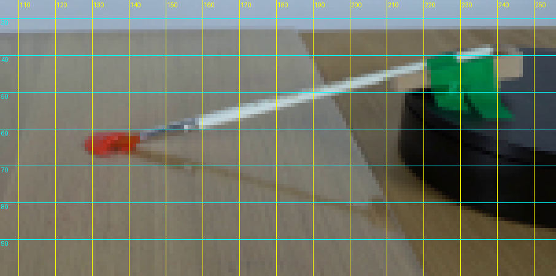
视觉工具实际返回图片 4
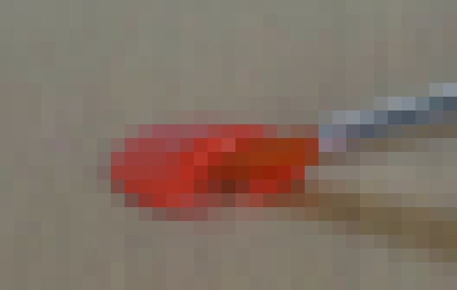
视觉工具实际返回图片 5
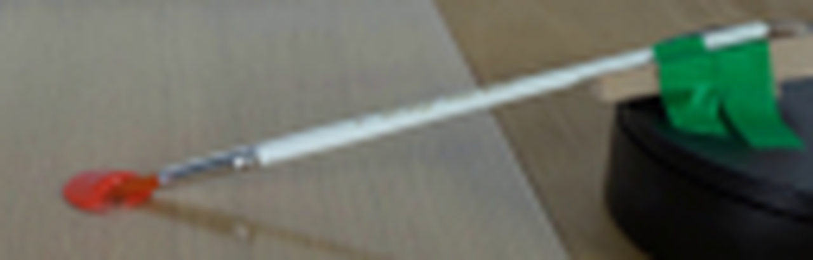
视觉工具实际返回图片 6

视觉工具实际返回图片 7
视觉工具实际返回图片 8

视觉工具实际返回图片 9
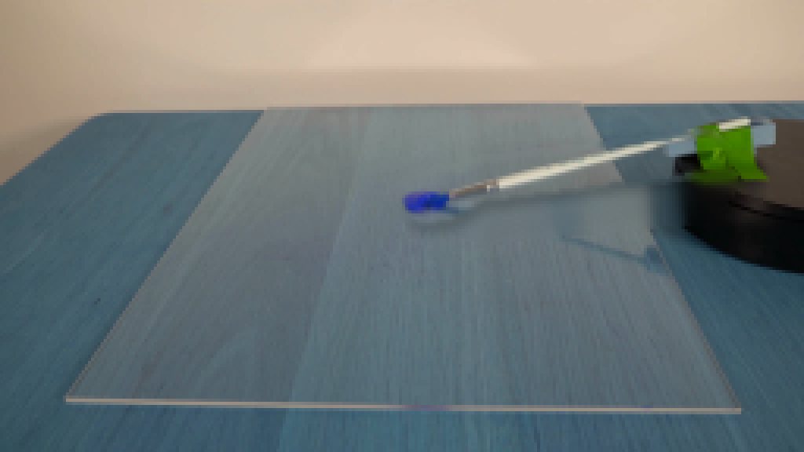
视觉工具实际返回图片 10
视觉工具实际返回图片 11
视觉工具实际返回图片 12
视觉工具实际返回图片 13
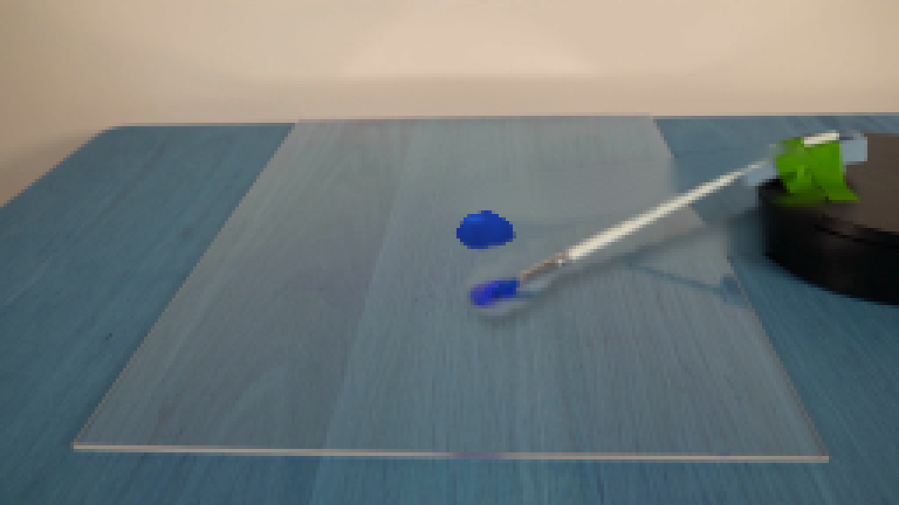
视觉工具实际返回图片 14
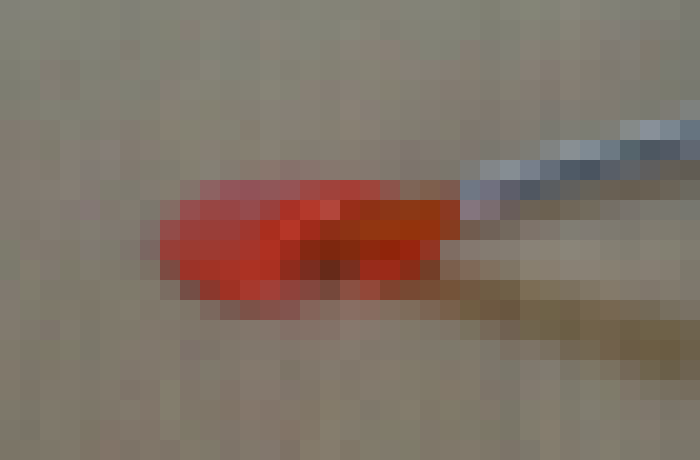
视觉工具实际返回图片 15
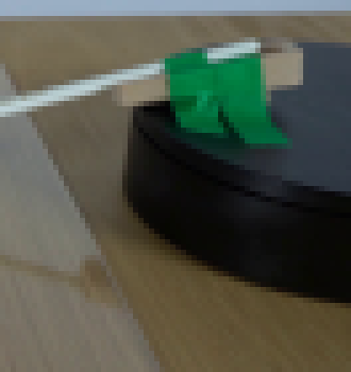
视觉工具实际返回图片 16
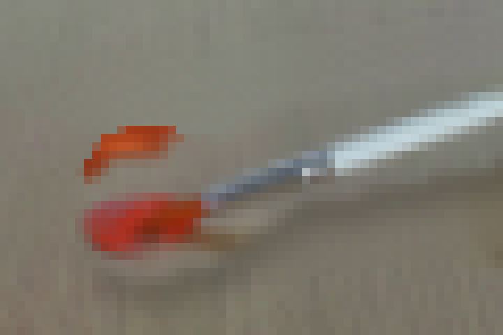
视觉工具实际返回图片 17
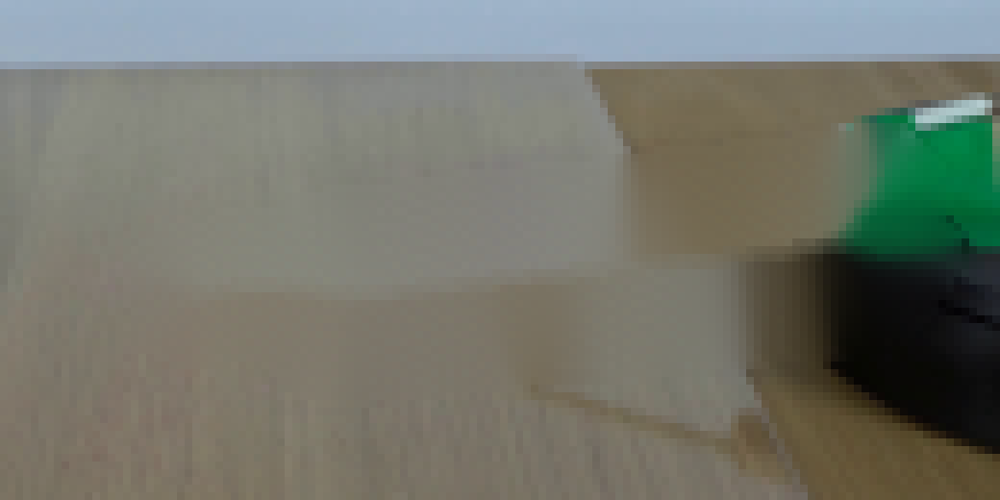
视觉工具实际返回图片 18
视觉工具实际返回图片 19
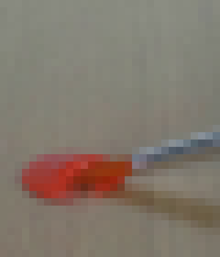
视觉工具实际返回图片 20
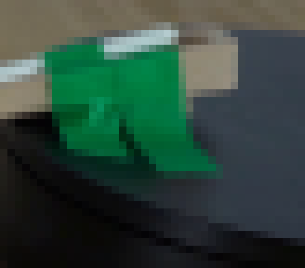
视觉工具实际返回图片 21
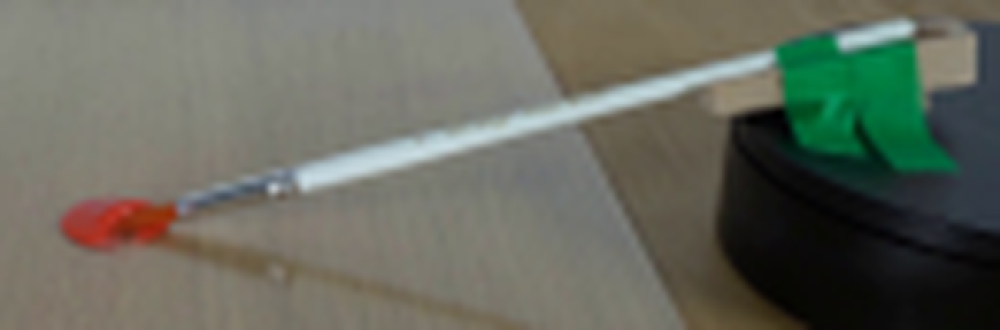
视觉工具实际返回图片 22
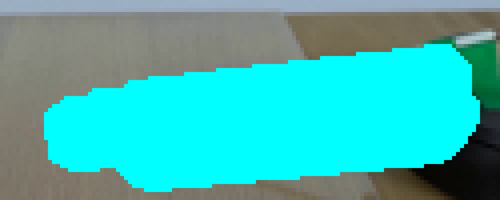
视觉工具实际返回图片 23
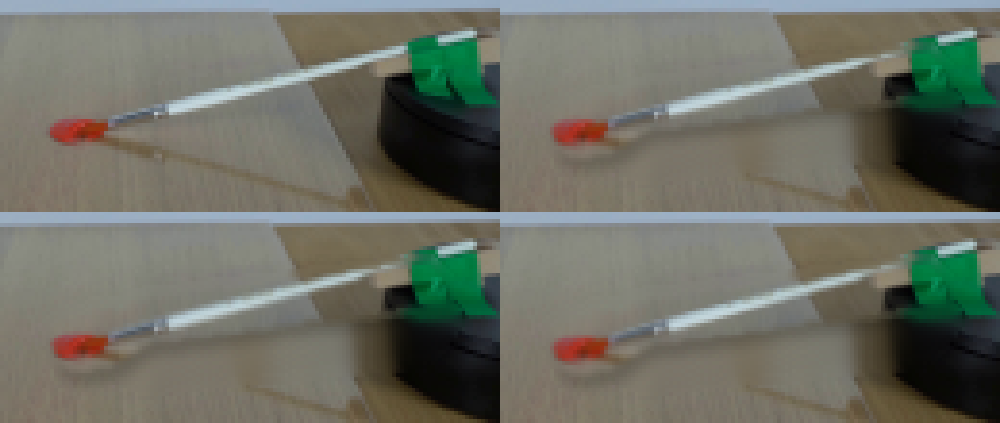
视觉工具实际返回图片 24
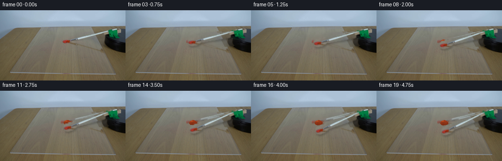
视觉工具实际返回图片 25
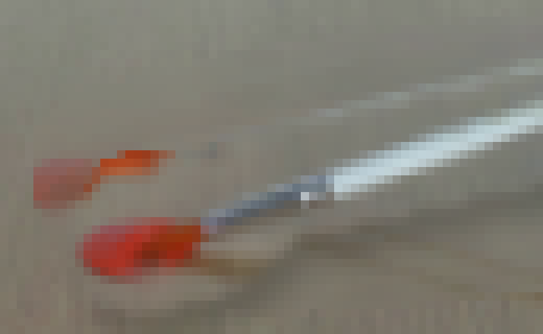
视觉工具实际返回图片 26
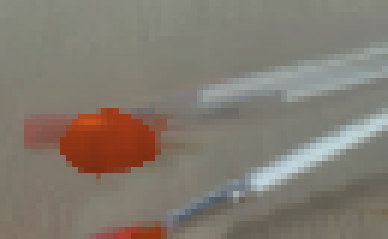
视觉工具实际返回图片 27
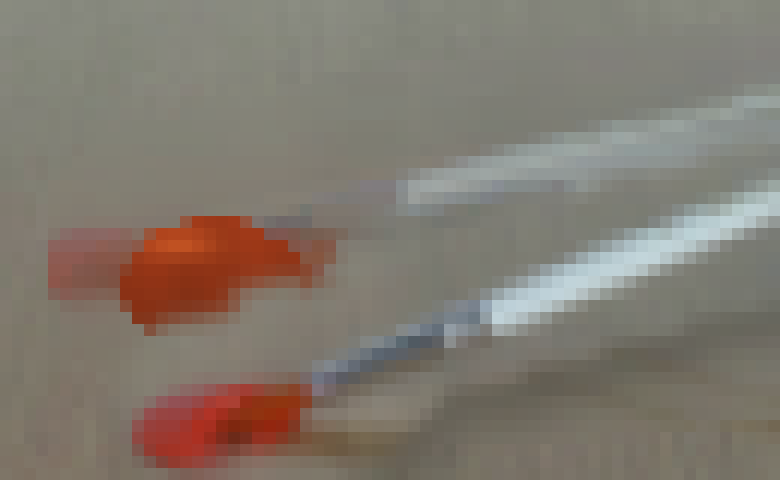
视觉工具实际返回图片 28
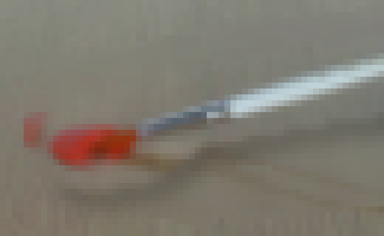
视觉工具实际返回图片 29
视觉工具实际返回图片 30
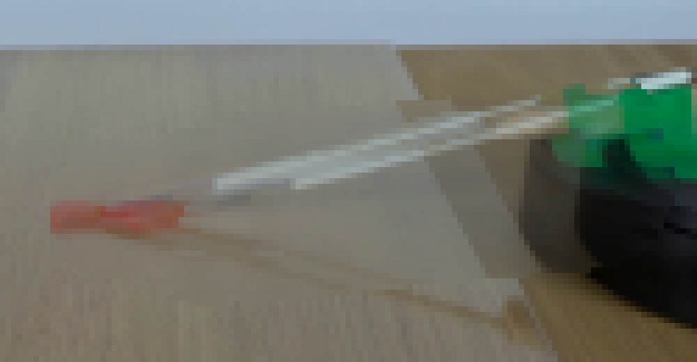
视觉工具实际返回图片 31
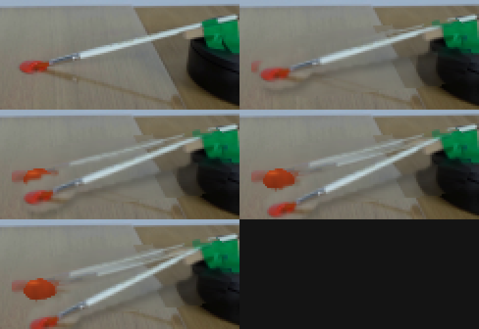
保存候选 3 份；完成命令 42 次；可验证图片返回 31 张。原始 API 响应与完整日志保留在本地。